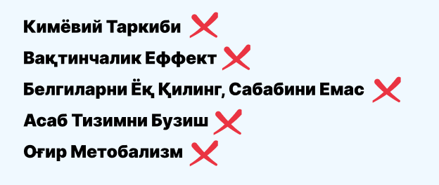
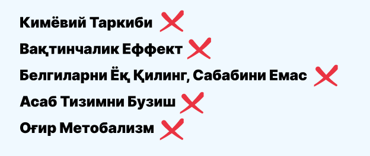
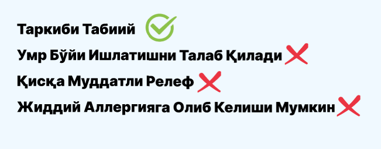
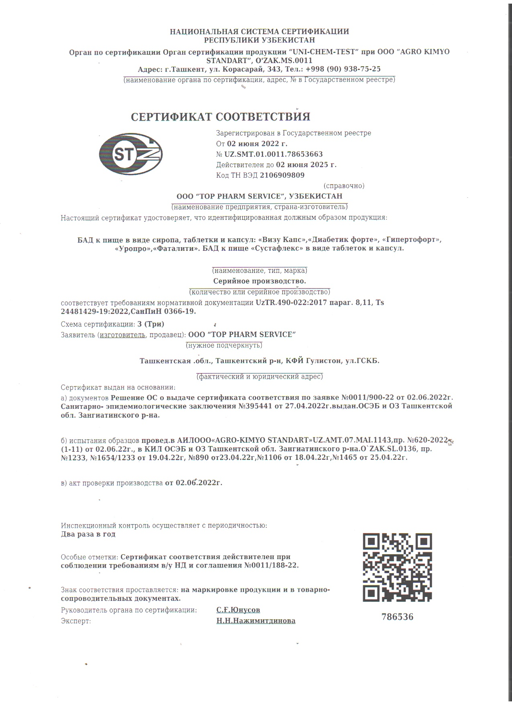
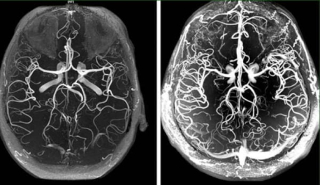
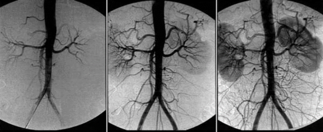

Қон томирларини тозалайди
мутлақо хавфсиз биологик фаол қўшимча
қон босимини барқарорлаштиришга ёрдам беради
кучли терапевтик таъсирга ега
юрак ҳуружидан ҳимоя
юрак етишмовчилигида ёрдам беради
ЮРАК-ҚОН ТОМИР КАСАЛЛИКЛАРИ БУТУН ДУНЁ БЎЙЛАБ ЎЛИМНИНГ АСОСИЙ САБАБЛАРИДАН БИРИДИР!
ГИПЕРТЕНЗИЯ НОГИРОНЛИККА ОЛИБ КЕЛАДИ ВА МУДДАТИДАН ОЛДИН ЎЛИМ.
ЎЛИМ. 97% ГИПЕРТЕНЗИЯ
НОГИРОНЛАР ҲАЁТ УЧУН ВА
ЕРТА ЎЛИМГА ОЛИБ КЕЛАДИ. ЎЛИМ.
Гипертония, атеросклероз ва бошқа қон томир муаммолари ҳаёт сифатини жиддий пасайтириши ва ҳатто юрак хуружи ёки инсултга олиб келиши ҳам мумкин. Келажакда пайдо бўлиши мумкин бўлган жиддий асоратларнинг олдини олиш учун соғлиғингизга эътиборлироқ бўлиш ва томирларингизга ғамхўрлик қилишингизлозим.
97% ҲОЛЛАРДА ГИПЕРТЕНЗИЯ - ИНСУЛТ ВА ЮРАК ХУРУЖЛАРИГА САБАБ БЎЛАДИ
атеросклероз ривожланиш хавфини оширади, бу еса юрак хуружлари ва қон томирларининг пайдо бўлиши. Асосий сабаб - таркибнинг юқори даражаси. қон холестерини
ТЕЗДА ҲАР УЧИНЧИ НОГИРОННИ РИВОЖЛАНТИРАДИ ВА ҚИЛАДИ
Одам иш қобилиятини йўқотади ёки уйда ишлайди ёки махсус шароитларда. Кейин янги асоратлар пайдо бўлади. Улардан баъзилари қўзғашади бошқалар ва касаллик ўлимга олиб келади.
40га Кирмасдан ерта қариш ва кучдан қолиш
Барча ички органлар ва тизимларнинг иши қон айланиши сифатига боғлиқ. Агарда қон ифлосланса барча органлар ва тизимлар азият чекади, уларнинг барчаси эса инсонни ташкил қилади. Ҳатто тери ҳам маълум бир тизимдир ва Бу инсони тез қаришига олиб келади
ЮРАК-ҚОН ТОМИР КАСАЛЛИКЛАРИ БУТУН ДУНЁ БЎЙЛАБ ЎЛИМНИНГ АСОСИЙ САБАБЛАРИДАН БИРИДИР!
Бошлиқ оғриқ
Оёқ-қоларнинг музлаб, Жимирлаши
Шишиш Eрталаб
Тез юрак уриши – Халоват ёқолиши
Чарчоқ ва уйқучанлик
Доимий қон босими ойнаши от пойгаси
Терлаш
УШБУ АЛОМАТЛАРНИ ТОПДИНГИЗМИ? ГИПЕРТЕНЗИЯНИ ДАВОЛАНГ ДАРҲОЛ СИЗНИ САБЗАВОТГА АЙЛАНТИРМАГУНЧА!
ГИПЕРТО - ФОРТЕ САМАРАДОРЛИГИ КЛИНИК ТОМОНИДАН ТАСДИҚЛАНГАН СИНОВЛАР. УШБУ ВОСИТА 70 000 КЎНГИЛЛИГА ЁРДАМ БЕРДИ
Жаҳонюрак-қонтомир ташкилоти 12 ой давомидакасалликларбир қаторклиник синовларниўтказди. Уч гуруҳкўнгиллилар 365 кундавомидаклиник синовлардаиштирокетишди.
ТИББИЙ ПРЕПАРАТЛАР
 

ТИББИЙ ПРЕПАРАТЛАР
ТИББИЙ ПРЕПАРАТЛАР
Нормаллаш босим
Йўқ қилиш тромбоз
Мавжудлиги ён таъсири
Рад етиш даражаси холест
Йўқ қилиш юрак уриши
ГИПЕРТОФОРТ мутлақо хавфсиз, ножўя таъсирларга ега емас ва тиббий назоратисиз олиниши мумкин.

ГИПЕРТОФОРТ - бу "ноу-хау", олимларнинг ғурури. Холестерин
плакаларига кириб, уларни ичкаридан еритиб юборадиган
екстрактларнинг фаол CО2 фракциялари туфайли қон томирларини деярли
100% тозалашни таъминлайди.
ГИПЕРТОФОРТ қон томирларини тозалаш орқали миянинг нормал
овқатланишини тиклайди. Тананинг тикланишининг занжирли реакцияси
бошланади.
ГИПЕРТОФОРТ - дан фойдаланиш натижалари:
ГИПЕРТОФОРТ қабулқилган 1,5 ой давомидақонайланиши 99,71% гатикланади
ГИПЕРТОФОРТ қабулқилган 1,5 ой давомидақонайланиши 99,71% гатикланади
ГИПЕРТОФОРТ-томир девори тузилмалари ҳужқонайраларининг табиий томир кенгайиши ва томир торайиши омиллари мувозанатини тиклашга ёрдам беради, шунингдек қуйидаги аломатларнинг олдини олади:
- Бош ваюрактомирларининг тортишиши;
- Қон босими кўтарилиши;
- Мия томирлари деворларининг ўтказувчанлигини нормаллаштиради;
- Юрак ва мия томирларида атеросклеротик ўзгаришлар ҳақида огохлантиради;
- Юрак ва мия тўқималарининг гипокцияси;
- Кўз бўшлиғида томир тортишиши фонида кўриш қобилиятининг пасайиши;
- Нерв импульслари, хотира ва ақлий қобилиятларнинг фаолиятини нормаллаштиради;
- Дастлабки симптомларни йўқ қилади (бош айланиши, бош оғриғи, беҳузурлик хуружи, заифлик, бошдаги шовқин, иш қобилияти ва хотиранинг пасайиши, кўнгил айниши);
- Овқат ҳазм қилиш тизимининг мотор ва дренаж функцияларининг бузилиши;
- Оқсиллар, ёғлар, углеводлар алмашинуви жараёнларининг бузилиши;
- Қоннинг таркиби ва реологиясини тартибга солади;
- Уйқу бузилишининг ва ухлаб қолиш мелонизмини тўғрилайди;
- Вегето-томирли ўзгаришлар;
- Ёш билан боғлиқ хотира ва нутқ бузилишлари ва Альцсгеймер ҳамда Паркинсон белгилари;
БИОГЕН КОНЦЕНТРАТИНИНГ АСОСИЙ КОМПОНЕНТЛАРИ
GINKGO BILOBA
Қон томирларининг қаршилигини камайтиришга ва умумий қон
оқимини оширишга ёрдам беради
VALERIAN OFFICINALIS
Қўллаб-қувватлайди нормал алмашиш моддалар, асаб тизимини
нормализация қилади
Дўлана мевалари
Қонингизнинв янада самарали циркуляцияси учун қон томирлари
кенгайишига ва қон босимини пасайтиришга ёрдам беради
ELECAMPANE BALAND
Токсинларни йўқ қилади, қон оқимини яхшилайди Қонни тозалашга
ёрдам беради
МАШҲУР АМЕРИКАЛИК КАРДИОЛОГ СУҲБАТИНИ ТЎЛИҚ ТОМОША ҚИЛИНГ
15 000 000 $ ва 8 йил сарфландитаркибийқисмларнитадқиқ қилиш Сенсацион ривожланиш олимлар. Профилактик тикловчи тайинланди Олтин Мортар халқарофармацевтикамукофоти. Кўп босқичли тестлар самарадорлигини тасдиқлади ишлаб чиқиш, барча зарур лицензиялар, сертификатлар олинган.
Қон томирларини тозалайди
мутлақо хавфсиз биологик фаол қўшимча
қон босимини барқарорлаштиришга ёрдам беради
кучли терапевтик таъсирга ега
юрак ҳуружидан ҳимоя
юрак етишмовчилигида ёрдам беради

Жуда қизиқарли экан. Гипертофорт га буюртма бердим.
Madina Toshkent vil, Bekabod tum.
Буюртма бердим. Почта орқали етказиб беришлари қулай, мамлакатнинг
исталган бурчагига келтириб беришлари мумкин.
Robiya Sirdaryo vil, Sardoba tum.
Ушбу препарат билан юқори қон босимимни даволаганман. Юқори қон
босими узоқ вақтдан бери ҳаётимдаги шеригимга айланганди. Вақт
ўтиши билан унга қандли диабет ва буйрак муаммолари қўшилди.
Хотира ва кўриш жуда ёмон эди. Ҳаётим давомида ниманинг иложи
бўлса, ўша билан даволандим. Ҳеч нарса тайинли ёрдам бермади.
Гиперфорте ни синаб кўришга қарор қилдим. Биринчи марта интернет
орқали дори-дармонларни буюрган эдим, лекин ҳаммаси оддий бўлиб
чиқди.
Barchinoy .Nukus shaxar.
Мен "Гипертофорт" га буюртма берган уни синаб кўрганларданман. 7
йил давомида менда гипертония бор эди. Доимий равишда
таблеткалардан фоедаланиб келардим.Қон босимим нормал бўлганини
мен ҳатто эслай олмайман. Даволаган шифокорнинг маслаҳати билан
томирларни тозалашга қарор қилдим. "Гипертофорт" ни бир ой
давомида қабул қилгандан сўнг, қон босимим нормал ҳолатга қайтди!
Энди мен 2 ойдан бери гипертониясиз яшаяпман. Бу умуман бошқача
ҳаёт экан. Ўзимни анча яхши ҳис қила бошладим. Мен буажойиб
воситани, айниқса, бундай нархда ҳаммага тавсия қиламан.
Anvar .Toshkent shaxar, shayxontoxur tum.
Men buni kecha qabul qildim ota-onam uchun. Yaqinda korikdan
otkazdim. Ularda ortiqcha xolestrin va tomirlarida tromblar
yegilishi tufayli daxshatli xolatga kelibdi.
Aziza Andijon vil . Paxtaobod tum
Juda qiziqarli ekan .Gipertafortega buyurtma berdim va kichik
aksiya ishtrokchisiga aylanib katta chegermaga ham ega boldim .
Rahmat !!!!
Akbar Xojiona Qarshi shaxar.
Men bundan toliq kurs lichenya qabul qildim.Qon bosimim
vaqti-vaqti bilan kotarildi, ba’zida yurakning noteks ritmi bor
edi . Men uni taxminan 2-2 7xafta ichdim. Qon bosii kotarilshi
toxtadi. Ozimni butunlay soglom odamdek xis qilyapman.
Nig'mat Toshkent shaxar . Yunusobod tum
Мен қон томирларимни тозалашда фойдаланган препаратни қўллаш
бўйича тажрибам билан бўлишмоқчиман. Бу маҳсулот ҳақиқатан ҳам
менга фойда берди! Мен энергиям ошганини ва қон босимим
барқарорлашганини ҳис қила бошладим. Мен ушбупрепаратни юрак-қон
томир касалликларидан азият чекувчи ҳар бир кишига тавсия қиламан
Анна Морозова Toshkent shaxar. MirzoUlugbek tum.
Мен қон томирларимни тозалаш учун дори-дармонларга бироз шубҳа
билан қарардим, лекин шифокор тавсиясига кўра бу препаратни синаб
кўришга қарор қилдим. Ва бундан афсусланмадим! Муолажанинг
бошидаёқ мен энергия оқимини ва умумий аҳволим яхшиланганини ҳис
қилдим. Ўшандан бери будорименинг кун тартибимнинг ажралмас
қисмига айланди.
Begzod Xorazm vil Xiva tum

Раҳмат! Яқинда Первий каналда ушбу дори ҳақидаги дастурни кўрдим.
Унда препарат кўплаб шифокорлар томонидан мақталди. Шунингдек,
улар қонтомирларини тозалаш жуда муҳим эканлигини айтишди.
Gulmira Toshkent vilZangiota tum

Препарат жудазўр. Тўлиқтасдиқлайман! Қон босимим доим 140га 90
эди. Мен шу биланбирнечайиляшадим. Дорини қабул қилиш курсидан
кейин босим 125га 85 бўлди. Соғлиғим анча яхшиланди.
Abdurashid Andijon shaxar